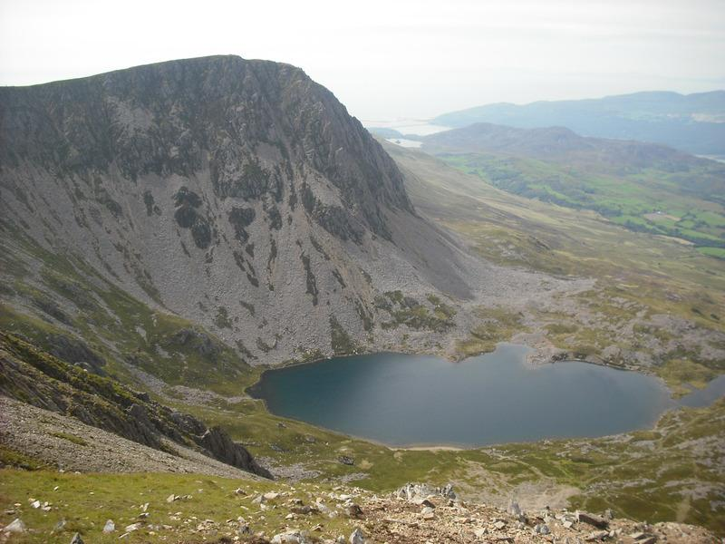
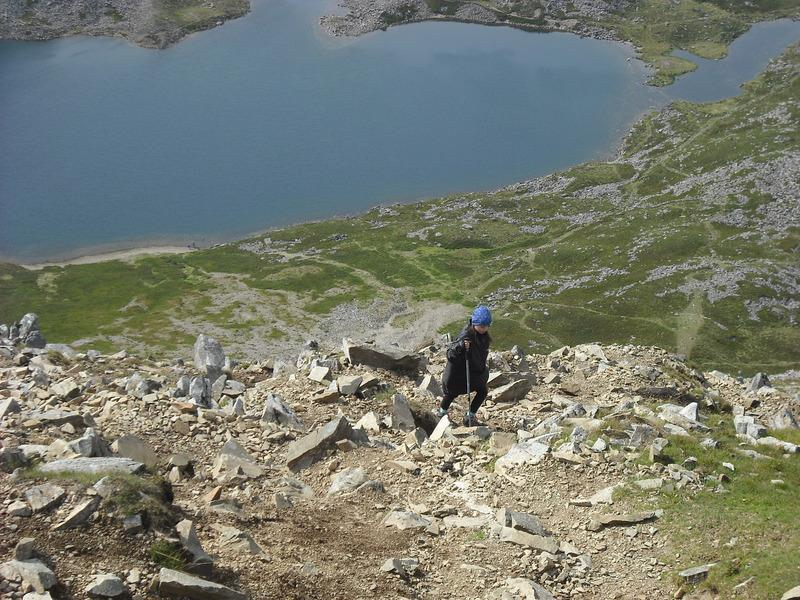
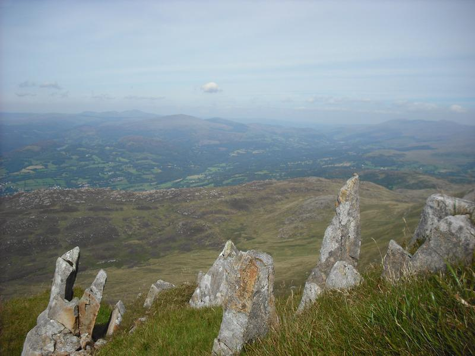
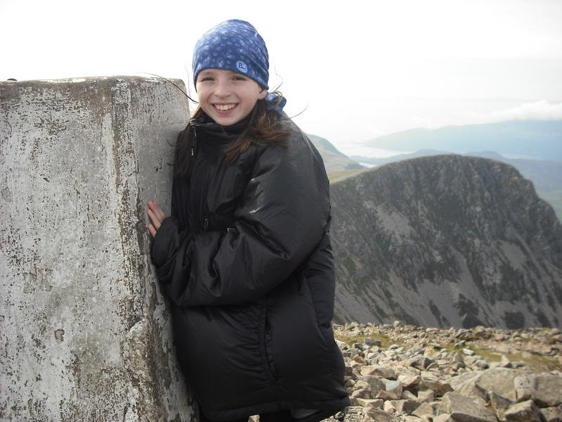
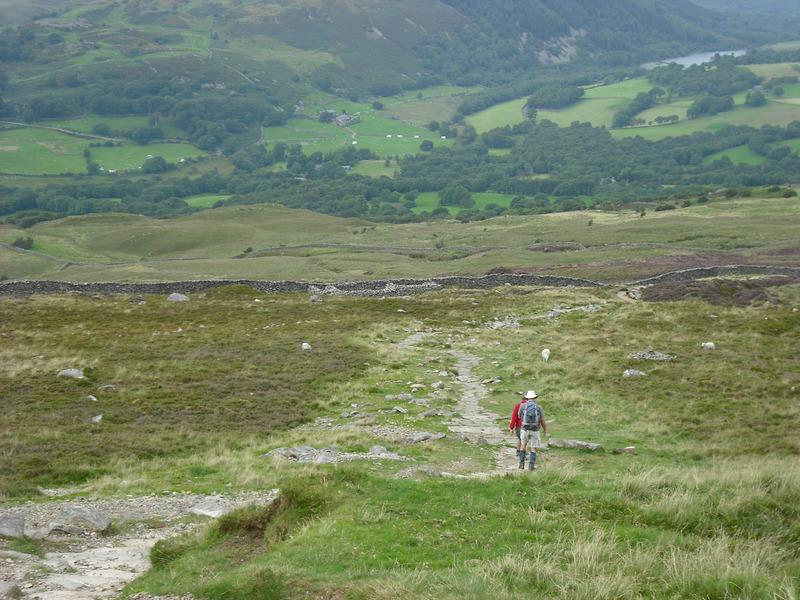

Cyfrwy Arete Cadair Idris
Cyfrwy Arete.
{kind=link}
After weeks of poor weather the forecast was good for a couple of days. The children were keen to go camping, so I suggested going to the Cwmrhwyddfor Farm camp site near Tal y Llyn, off the A487 Dolgellau to Machynlleth road. I hadn't stayed there since the 1980's, but remember it being a decent site.
We arrived late in the afternoon to be met at the entrance by the old man who owns the farm. He now has very bad arthritis and spends his day sitting in the car collecting camp site fees, while the rest of the family work the farm. Although it was the middle of the summer holidays, the site wasn't too crowded. We drove around the site and settled near the far end of the top field next to a couple of large family tents. These were occupied by a group of Scousers with several small children and a number of dogs. We did wonder if they children or the dogs would be noisy, but as it turned out they weren't the problem.
Ella plodding up the scree slope.
{kind=link}
We went for tea at the pub at the end of Tal y Lyn, where the food was basic "pub grub". We got back to the camp site as it was getting dark and after half an hour or so chatting went to bed. The Scousers were starting to enjoy themselves and as the evening progressed they got drunker and louder. The noise continued until 12:30am when they finally all passed out. Amazingly amidst all the racket the children and dogs were silent, we reckon they must have drugged them.
We got up the next morning and after breakfast drove round to Dolgellau to buy some socks for Hannah, as we had forgotten to bring any! We drove round to the car park at Ty-nant. The plan was to walk up to Llyn y Gadair, where I was going to take the children up Cyfrwy Arete. I knew that the Pony Path that starts from near the car park lead up the ridge to the summit and didn't provide easy access to the Cwm. We crossed the road and walked through the camp site and through the trees on the far side of Llyn Gwernan. The plan was to try and cut across either end of the lake to join the path starting from the Gwernan Lake Hotel. Unfortunately, this didn't work out as planned and we had to go a long way past the end of the lake before regaining the road and back tracking to the hotel. To add insult the injury it was a Monday and guess which is the only day of the week the hotel is closed? Rather than a nice bar meal, we sat on the benches outside and munched our sandwiches.
Looking NE from the screes.
{kind=link}
The walk up to the Cwm containing Llyn y Gadair was really enjoyable. The views of Cadair gradually unfold as you gain height. Even the fact that I was carrying a heavy sack with four sets of climbing gear didn't spoil it. I had told everyone that we would be walking up to a lake, but neglected to mention that there were two lakes. There was an outbreak of moaning when we arrived at Llyn Gafr and I said that we had to continue up the steep slope in front to Llyn y Gadair. It was about 2:00pm by the time we arrived and I estimated it would take about 2hrs to climb the arete itself, plus however long it took us to get to the bottom of it. So reluctantly we decided that there wasn't time to do the climb.
Having got this far, I wanted to traverse the summit. Ella said that she wanted to come with me, but the others decided to descend. I gave them the map and showed them that they just needed to contour along the slope until they joined the Foxes path, which would lead them back to the car.
Ella on the summit of Pen y Gadair.
{kind=link}
Ella and I walked over towards the start of the 1,000 foot scree slope that leads to the summit of Penygadair. I checked the altitude on my Casio Protrek watch and was pleased to see that it agreed with the map. The scree slope is very badly eroded and the only thin worse than ascending it would be descending it. With my big load I was going slowly. Ella was tired and kept stopping for rests. However, she never once complained, even though she had a blister. As we gained height we were exposed to the wind. We stopped to put on our Rab Generator smocks, which have been a great gear success.
On the summit ridge the wind was buffeting Ella and by the cairn she could lean into the wind with her whole body weight. It seemed a long way along the Pony Track before it began dropping back into the valley. Just before we started descending,we met two mountain bikers who had cycled up from Dolgellau and were carrying their bikes. I started to get cramp in my legs, but drinking some water soon relieved the symptoms.
Almost back at the road.
{kind=link}
The forecast had been for the weather to deteriorate in the evening and I could see clouds arriving from the direction of Barmouth and beginning to envelop the higher ground. Luckily, we managed to get back to the road before it started raining. At the junction with the road I didn't know whether to turn left or right, as I had given the map to the others. I decided to turn right and in less than five minutes we were back at the car.
We drove back to Dolgellau and had tea at Y Sospan in Queens Square. This is a great little cafe/restaurant in the old (1606) jailhouse. We had a cup of coffee and a snack there earlier in the day. The food in he evening was very good and reasonably priced. They are also very child friendly.